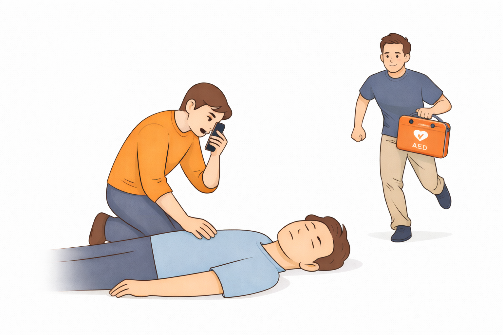

Call Emergency Services & Find an AED
What This Step Means
Call emergency services immediately if the person is unresponsive and not breathing normally. Emergency responders can provide advanced care and bring life-saving equipment. If possible, locate an Automated External Defibrillator (AED) while waiting for help to arrive.
Why Calling Immediately Matters
When someone experiences cardiac arrest, every minute without treatment decreases their chance of survival. Calling emergency services ensures that trained responders are on their way. Early activation of emergency services is one of the most important steps in saving a life.
What To Do
- Call 911 or your local emergency number immediately
- Put your phone on speaker so the dispatcher can guide you
- If others are nearby, send someone to get an AED
- Follow the dispatcher’s instructions while preparing to start CPR
What Is an AED?
An Automated External Defibrillator (AED) is a device that checks the heart’s rhythm and can deliver a shock if needed. AEDs are designed to be used by the public and provide clear voice instructions. They are often found in public places such as airports, schools, gyms, and shopping centers.
